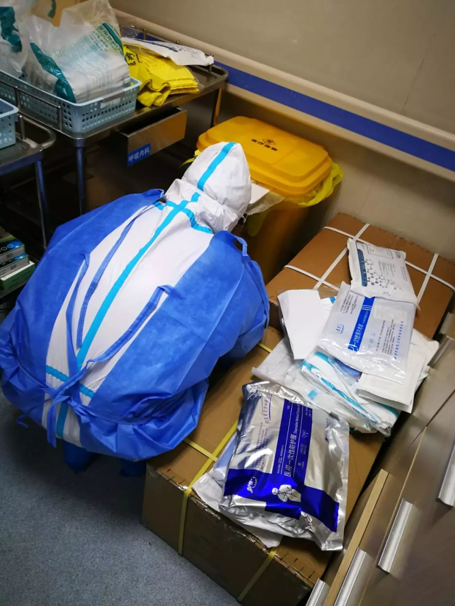
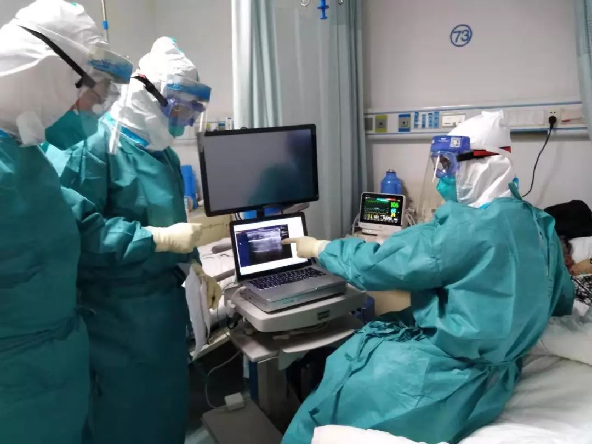

武汉医生口述：1/4同事被感染，口罩不合格也按时进病房
原文链接 备份链接 “1月31日，最新通知下来了，由于医院各科室医护人员减员情况严重，医院决定每个科室留5名医生倒班，每班6小时。这样的值班时长对于已经连续奋战了10天的医护人员来说危险系数很高。但医护人员现在不允许请假，除非被感染。” …


*************▲************* 刘大钺。 （采访对象供图/图）
全文共*2013*字，阅读大约需要5分钟。
各地支援的物资已经是到了，一问，说这东西还有很多，但是找谁领，不知道，这个渠道不太通畅。
隔离病房是要真正隔离，现在是半开放。这个风险不单单是指治疗方面，有可能会有传播的问题。现在如果没有保安的话，公安部门能不能进驻到这8个定点医院？
本文首发于南方周末 未经授权 不得转载
文 | 南方周末记者 李在磊
南方周末实习生 宋思静
责任编辑 | 何海宁
“现场情况比我们想象的更严峻一些。”2020年1月30日，刘大钺对南方周末记者说。
这位广东医疗队中山附一领队，是中山大学附属第一医院感染管理科主任医师，2003年曾参加过SARS疫情救治，是感染病管理领域的专家，目前在武汉定点的汉口医院救助。
随着全国对武汉支援相继到位，武汉定点医院的物资一定程度上得到保障，医务人员人手大大加强，但是防疫形势依旧十分严峻。
刘大钺说，医院一线的情况十分困难，床位短缺、设备落后，最突出的问题是管理混乱，很容易造成病毒的二次传播。
1
南方周末：医院一线现在主要有哪些困难？
刘大钺：实话实说，目前来讲，我们每天收治的病人数量还是比较多。很多门诊的病人收不进来，因为病房有限。护士是4小时一班，医生6小时一班，但实际上（换班时间）都大大延迟，因为病人太多。现在就算是转院的话，最快也要2月3号——火神山医院建成是2月3号，雷神山医院是5号。
现场情况比我们想象的更严峻一些。也有一些好转，随着全国对武汉的支援，物资是到了不少。但是有个问题就是，发放到一线医务人员的渠道不是太通畅，可能程序比较“啰嗦”一点。
比如，那天我们N95口罩只剩100个了，最多就够撑一天。比如说护目眼镜，整个病房只有几十个，上完这一班就完了，就只能反复消洗（来使用）。（医院）赶快反映，有关官员来督办，当天就送来了1000个，第2天就送来了3000个。
这说明，各地支援的物资已经是到了，一问，说这东西还有很多，但是找谁领，不知道，这个渠道不通畅。这种日常供应的申报，我觉得可能存在问题。

刘大钺在整理医疗物资。 （采访对象供图/图）
南方周末：除了物资不通畅之外，医院的医疗状况究竟如何？
刘大钺：通过接触的这几天，整个医疗的流程算是基本理顺了。当时我们（指广东医疗队）接手70个病人，3个病危、52个病重，劳动强度比较大。把这个病区交给了广东医疗队，我们义无反顾、毫无怨言地接下来。可是，如果从医学的专业角度去看，病房的设置比较混乱，病人和病区就是乱分。只能在现有的技术条件下慢慢理顺。
大量病人和家属是混住，可以自由出入，现在再把陪护的家属撵出去，家属就很大意见，坚决不走。从专业角度来看，应该是单人、单间，家属是不允许进去的。现在它基本上都是3人间、4人间、6人间，还有7人间。
在目前的情况下，我们尽自己最大努力，按照现在的医疗流程，把它稍微理顺一些，2003年SARS那时候，硬件环境比这差多了，但是仍然能够管得好。我觉得现在管理还是缺一些。至少门口要有人把守，要有人看护，不能什么人都能进出。
隔离病房是要真正隔离，现在是半开放。所以说，这个风险不单单是指治疗方面，有可能会有传播的问题。
南方周末：核酸检测现在是不是还有一定的困难？
刘大钺：现在还是市里在检。据我们现在了解的情况，还都是要送过去检测。采集样本送过去，出结果再送回来，这个周期很长，至少两天以上。
广东在（1月）19号的时候就已经全省发文，有能力的医院就要开展（检测）。我们现在这家医院没有资质，它是二级医院，现在来了专家，都是有证的，希望能有一个快速审批渠道。基本仪器有的话，我们是有能力开展的，现在也在积极准备和申请。
2
南方周末：现在主要的治疗方案是什么？现有条件下，治疗方案实施起来有哪些困难？
刘大钺：实际上最主要还是供氧问题。新型冠状病毒感染肺炎本来就没有特效药物，其实就是提高免疫力，“氧疗”或者用激素，再补充一些体力、能量。
目前这些都有较大问题。比如说最简单的供氧，氧气供应上的话，整个（人体机能）慢慢就会改善，没有充足的氧气就会呼吸困难，最后可能是因为这个原因导致死亡。“氧疗”非常关键，现在是供氧不足、管道老化，一个病人要用高流量的话，其他病人就吸不了了。
还有一个问题，有的病人吸氧气，有的病人没有，这样会产生矛盾，说为什么这个病人能吸氧。现在这个条件造成的后果，第一是治疗不能保证，第二是潜在的风险非常高。现在最担心的就怕发生群体性事件，这个一旦发生就很可怕。
我个人观点，这是一个很严重的问题，听说别的院区出现打医生的行为，我们这里也有言语威胁医生的情况。

广东医疗队在会诊病人。（采访对象供图/图）
南方周末：除了迫在眉睫的难题外，你对中长期救助有什么建议？
刘大钺：感染科病房应该是专门的传染病医院布局，要按照隔离病房的要求来做。即便同济医院也大部分是普通病房，本来就是开放的，家属都可以进。现在如果没有保安的话，公安部门能不能进驻到这8个定点医院？
接下来，我们打算对二楼进行改造，以前隔离得太小了，要重新再隔，扩大隔离分区，因为大楼承重不能打掉，只能是扩大清洁区和缓冲区。以前清洁区、缓冲区就那一点点。清洁区和半污染区中间要有一个缓冲区，半污染区和污染区之间要有一个缓冲区，穿防护服是在清洁区和半污染之间的缓冲区，脱防护服是在污染区和半污染区之间的缓冲区。现在没有半污染区，脱穿是连在一起的，你说是不是有风险？所以就是说得把它扩大，弄出半污染区，尽可能地按标准才行。

征集

《南方周末》现向所有身处新冠肺炎一线的读者公开征集新闻线索。我们欢迎武汉及周边城市医患联系记者，提供防疫前线的一手资讯，讲述您的新春疫情见闻。若您不在武汉，但您身处之所也有与疫情相关的重要新闻线索，亦欢迎您与我们分享。疫情仍在蔓延，南方周末将执笔记录每位国人在疫情面前的希望与困境，与广大读者共同面对疫情。祝愿所有读者朋友们，新春平安。线索可直接给本篇文章留言，格式为：【线索】+内容+您的电话（绝对会对您的个人信息保密）
戳击下面图片 继续阅读专题


原文链接 备份链接 “1月31日，最新通知下来了，由于医院各科室医护人员减员情况严重，医院决定每个科室留5名医生倒班，每班6小时。这样的值班时长对于已经连续奋战了10天的医护人员来说危险系数很高。但医护人员现在不允许请假，除非被感染。” …
原文链接 备份链接 ************************** *************▲************* 一家定点医院输液室里，坐满了输液的病人。（李福荣/图） 全文共*2678*字，阅读大约需要7分钟。 “住院 …
原文链接 备份链接 陈德昌说，金银潭医院的重症病人情况比较严重。在他工作的病房里，29个病人有16个都上了呼吸机，同时面临物资短缺的难题。当他们作为上海医疗队进驻时，原有医护人员已连续工作近一个月了。这次出征，比想象中要艰苦。 57岁的陈 …
原文链接 备份链接 祁立说现在最大的困难，是发热门诊的就诊人数过多。而一线医务工作者最需要的，是能让患者根据规范的指南分级诊疗，减轻发热门诊和隔离病房不必要的压力。整个采访，他没有表达恐慌和焦虑，只希望传递客观、真实、有价值的信息。 记 …
原文链接 备份链接 新型冠状病毒疫情像是一场突如其来的阴霾，在这个冬天笼罩了华中大地。相较于最受关注的武汉市民，周边城市的人们，像是处在阴霾边缘，遭受侵袭，却又不常被看见。面对重重困难，孝感、黄冈、黄石、信阳、荆州、天门……各个城市的百姓 …